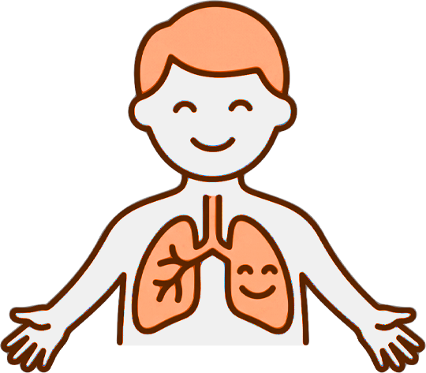
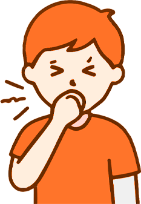

هو مرض مزمن يصيب الجهاز التنفسي، يؤدي لانتفاخ وضيق الشعب الهوائية وزيادة الإفرازات المخاطية، مما يعيق مرور الهواء وصعوبة في التنفس.

الالتزام التام بأخذه يومياً حسب وصفة الطبيب، حتى في الأيام التي لا يشعر فيها الطفل بأعراض.
استخدامه دائماً مع البخاخ لضمان وصول الجرعة كاملة للرئتين وليس للفم.
تحديد وتجنب مسببات الحساسية (مثل: التدخين، الغبار، العطور القوية، الحيوانات الأليفة، والالتهابات الفيروسية).
شجع طفلك على الرياضة الآمنة، واستخدم البخاخ الإسعافي قبل الجهد إذا لزم الأمر.
أبلغ الإدارة بمهيجات الربو لدى طفلك، وزودهم ببخاخ إسعافي (أزرق) وأنبوب مباعدة إضافي يُترك في عهدة المعلم أو ممرض المدرسة.
السماح له باستخدام البخاخ فوراً عند السعال المستمر أو الشعور بضيق في التنفس دون انتظار أو استئذان.
التوتر والخوف يزيدان من سرعة التنفس وضيقه؛ حافظ على هدوئك أثناء النوبة لتنعكس طمأنينتك على طفلك.
درّبه تدريجياً وبإشرافك على تركيب أنبوب المباعدة واستخدام البخاخ بنفسه لبناء ثقته وتقليل شعوره بالعجز.